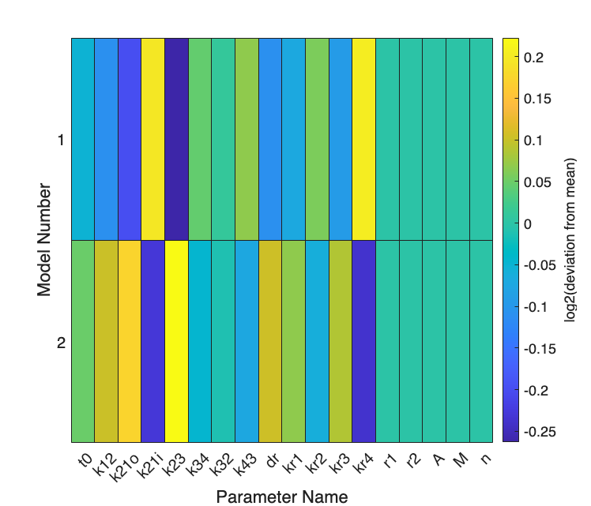

Contents
- SSIT/Examples/example_11_LoadingandFittingData_CrossValidation
- Section 2.3: Loading and fitting time-varying STL1 yeast data
- Preliminaries
- Load model fitted using Metropolis-Hastings:
- Perform Cross-Validation fitting different replicas at the same time
- Set Fitting Options:
- Save model & cross-validation results:
SSIT/Examples/example_11_LoadingandFittingData_CrossValidation
%%%%%%%%%%%%%%%%%%%%%%%%%%%%%%%%%%%%%%%%%%%%%%%%%%%%%%%%%%%%%%%%%%%%%%%%%
Section 2.3: Loading and fitting time-varying STL1 yeast data
* Fitted model evaluation using cross-validation
%%%%%%%%%%%%%%%%%%%%%%%%%%%%%%%%%%%%%%%%%%%%%%%%%%%%%%%%%%%%%%%%%%%%%%%%%
Preliminaries
Use the 4-state STL1 model from example_1_CreateSSITModels and its FSP solutions from example_4_SolveSSITModels_FSP
%clear %close all % example_1_CreateSSITModels % example_4_SolveSSITModels_FSP % example_1_CreateSSITModels % example_4_SolveSSITModels_FSP % example_8_LoadingandFittingData_DataLoading % example_9_LoadingandFittingData_MLE % example_10_LoadingandFittingData_MH
Load model fitted using Metropolis-Hastings:
load('example_10_LoadingandFittingData_MH.mat')
% View summary of 4-state STL1 model: STL1_4state_MH.summarizeModel %%%%%%%%%%%%%%%%%%%%%%%%%%%%%%%%%%%%%%%%%%%%%%%%%%%%%%%%%%%%%%%%%%%%%%%%%
Species:
g1; IC = 1; discrete stochastic
g2; IC = 0; discrete stochastic
g3; IC = 0; discrete stochastic
g4; IC = 0; discrete stochastic
mRNA; IC = 0; discrete stochastic
Reactions:
Reaction 1:
s1: 1*g1 --> 1*g2
w1: k12*g1
Reaction 2:
s2: 1*g2 --> 1*g1
w2: (max(0,k21o*(1-k21i*Hog1)))*g2
Reaction 3:
s3: 1*g2 --> 1*g3
w3: k23*g2
Reaction 4:
s4: 1*g3 --> 1*g2
w4: k32*g3
Reaction 5:
s5: 1*g3 --> 1*g4
w5: k34*g3
Reaction 6:
s6: 1*g4 --> 1*g3
w6: k43*g4
Reaction 7:
s7: NULL --> 1*mRNA
w7: kr1*g1
Reaction 8:
s8: NULL --> 1*mRNA
w8: kr2*g2
Reaction 9:
s9: NULL --> 1*mRNA
w9: kr3*g3
Reaction 10:
s10: NULL --> 1*mRNA
w10: kr4*g4
Reaction 11:
s11: 1*mRNA --> NULL
w11: dr*mRNA
Input Signals:
Hog1(t) = A*(((1-(exp(1)^(-r1*(t-t0))))*exp(1)^(-r2*(t-t0)))/(1+((1-(exp(1)^(-r1*(t-t0))))*exp(1)^(-r2*(t-t0)))/M))^n*(t>t0)
Model Parameters:
{'t0' } {[4.6670e+00]}
{'k12' } {[5.6952e+00]}
{'k21o'} {[5.6202e+02]}
{'k21i'} {[3.3473e+00]}
{'k23' } {[3.8955e-01]}
{'k34' } {[1.2789e+00]}
{'k32' } {[4.0527e+00]}
{'k43' } {[6.6118e-01]}
{'dr' } {[2.2980e-01]}
{'kr1' } {[7.2306e-02]}
{'kr2' } {[2.7184e-01]}
{'kr3' } {[8.3779e+01]}
{'kr4' } {[1.3655e+01]}
{'r1' } {[4.1400e-03]}
{'r2' } {[4.2600e-01]}
{'A' } {[9.3000e+09]}
{'M' } {[6.4000e-04]}
{'n' } {[3.1000e+00]}
Perform Cross-Validation fitting different replicas at the same time
using SSITMultiModel
In this example, we will use the multimodel to allow parameters to change for different replica data sets (e.g., to allow for batch variations, or to explore how parameters change under different genetic variations). Here, we illustrate a quick means to generate the multimodel starting with a single template and a datafile with multiple replicas.
%%%%%%%%%%%%%%%%%%%%%%%%%%%%%%%%%%%%%%%%%%%%%%%%%%%%%%%%%%%%%%%%%%%%%%%%%%%
Set Fitting Options:
fitAlgorithm = 'fminsearch'; fitOptions = optimset('Display','final','MaxIter',200); % Note: 'MaxIter', 200 for fast run; Set to 'MaxIter', 2000 for accuracy % Make a copy of our 4-state STL1 model: STL1_4state_CrossVal = STL1_4state_MH; % Specify datafile name and species linking rules: DataFileName = 'data/filtered_data_2M_NaCl_Step.csv'; LinkedSpecies = {'mRNA','RNA_STL1_total_TS3Full'}; % Suppose we only wish to fit the data at times before 25 minutes. % Set the global conditions: ConditionsGlobal = {[],[],'TAB.time<=25'}; % Split up the replicas to be separate: ConditionsReplicas = {'TAB.Replica==1';'TAB.Replica==2'}; % Specify constraints on rep-to-rep parameter variations. Here, we specify % that there is an expected 0.1 log10 deviation expected in some parameters % and smaller in others. No deviation at all is indicated by 0. Log10Constraints = ... [0.1,0.1,0.1,0.1,0.1,0.1,0.1,0.1,0.02,0.02,0.02,0.02,0.02]; % Create full model: CrossValidationModel = SSITMultiModel.createCrossValMultiModel(... STL1_4state_CrossVal, DataFileName, LinkedSpecies, ConditionsGlobal,... ConditionsReplicas, Log10Constraints); CrossValidationModel = CrossValidationModel.initializeStateSpaces; % Run the model fitting routines: crossValPars = CrossValidationModel.parameters; crossValPars = CrossValidationModel.maximizeLikelihood(... crossValPars, fitOptions, fitAlgorithm); CrossValidationModel = CrossValidationModel.updateModels(crossValPars); CrossValidationModel.parameters = crossValPars; % Make a figure to explore how much the parameters changed between replicas: fignum = 11; useRelative = true; CrossValidationModel.compareParameters(fignum,useRelative);
Exiting: Maximum number of iterations has been exceeded
- increase MaxIter option.
Current function value: 37659.186562

Save model & cross-validation results:
saveNames = unique({ ...
'STL1_4state_CrossVal'
'ConditionsGlobal'
'ConditionsReplicas'
'crossValPars'
'CrossValidationModel'
});
save('example_11_LoadingandFittingData_CrossValidation',saveNames{:})